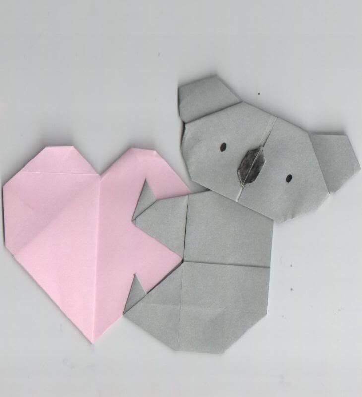

Origami Lion
Origami Giraffe

Intresting Facts About Koala
*Koalas aren’t bears – they’re marsupials!
*Koalas can be found in southeastern and eastern Australia
*Koalas can sleep up to 18 hours a day
Origami Koala

Origami Monkey
Origami Zebra
Origami Elephant